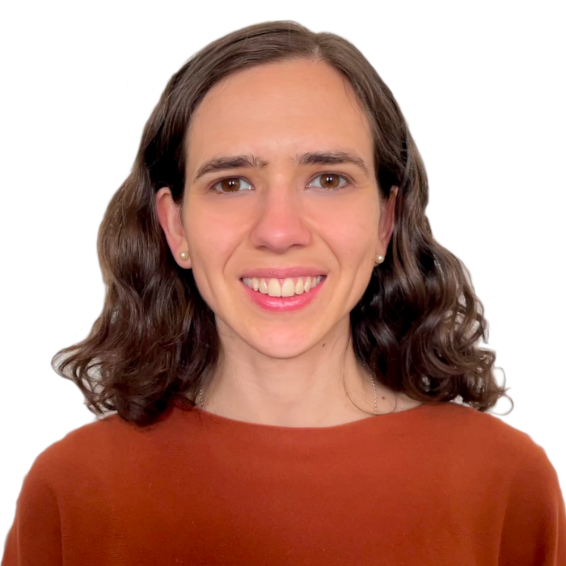

I am an Assistant Professor at the Department of Computer Science, LTH, Lund University. My research is in complexity theory, in particular in the areas of proof, circuit and communication complexity. You can read more about me here and about the research team here.
Contact info
-
Email:
susanna.rezendecs.lth.se
Address: Institutionen för datavetenskap, Lunds universitet
Ole Römers väg 3, office 2125e, 221 00 Lund, Sweden
News
- December, 2023: We're currently looking for PhD students in theoretical computer science. For more information see open positions and feel free to drop me an email.
- December, 2023: The Department of Computer Science will soon open a tenure-track assistant professorship position in the foundations of computer science, with a focus on logic and automated reasoning.
- November 29, 2023: I have been appointed a Wallenberg Academy Fellow (WAF) 2023! Wallenberg Academy Fellows, the career program for young researchers launched by the Knut and Alice Wallenberg Foundation in cooperation with the Swedish Royal Academies in 2012, provides long-term funding for young, promising Swedish and foreign researchers from all academic fields. This year 31 new researchers are appointed to the program.
Links
- Research team
- About me
- Short cv: PDF (updated Dec 2023)
- Open Positions
- Publications
- Google scholar, Orcid
- Some survey presentations
- Workshop on proof complexity at FOCS '21 (slides and videos)